Denim suave, liviano y resistente
Una tela cómoda para moverse, jugar y disfrutar sin sentirse rígida ni pesada.
Chaquetas de jean personalizadas para niños
En PazKids creamos chaquetas de jean infantiles, suaves, livianas y resistentes, pensadas para acompañar juegos, paseos, cumpleaños y momentos especiales. Cada diseño puede llevar su nombre, letras y parches elegidos para que tu hijo la use, la disfrute y la sienta realmente suya.
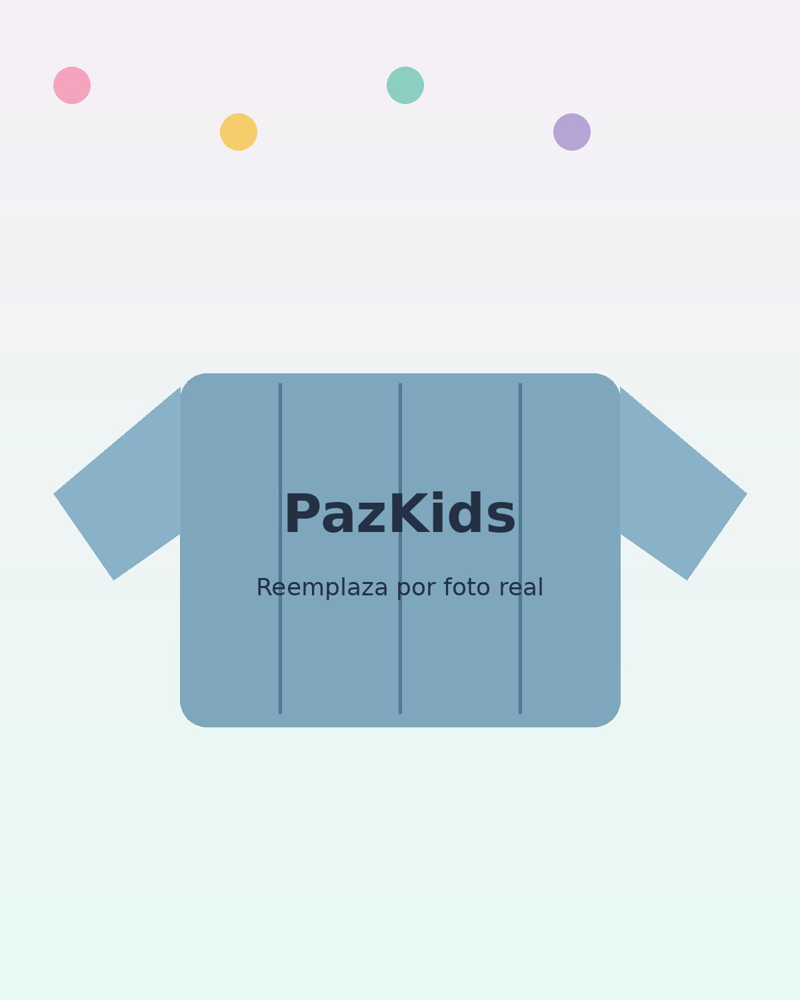
Más que ropa infantil: una prenda original, cómoda y con carácter propio.
LO QUE HACE ESPECIAL A PAZKIDS
Cada chaqueta PazKids combina comodidad, diseño y detalles personalizados para acompañar juegos, paseos, cumpleaños y momentos especiales. Una prenda pensada para que tu hijo la use, la disfrute y la sienta realmente suya.
Una tela cómoda para moverse, jugar y disfrutar sin sentirse rígida ni pesada.
Una chaqueta fácil de combinar, pensada para el día a día, paseos, viajes, cumpleaños y regalos especiales.
Letras y parches de colores que reflejan sus gustos, sus sueños y su personalidad, con materiales pensados para resistir el uso diario y conservar su encanto.
En PazKids creamos prendas de jean para niños: cómodas, suaves y con estilo propio. Las letras y parches son el toque final para convertir cada chaqueta en una pieza única.
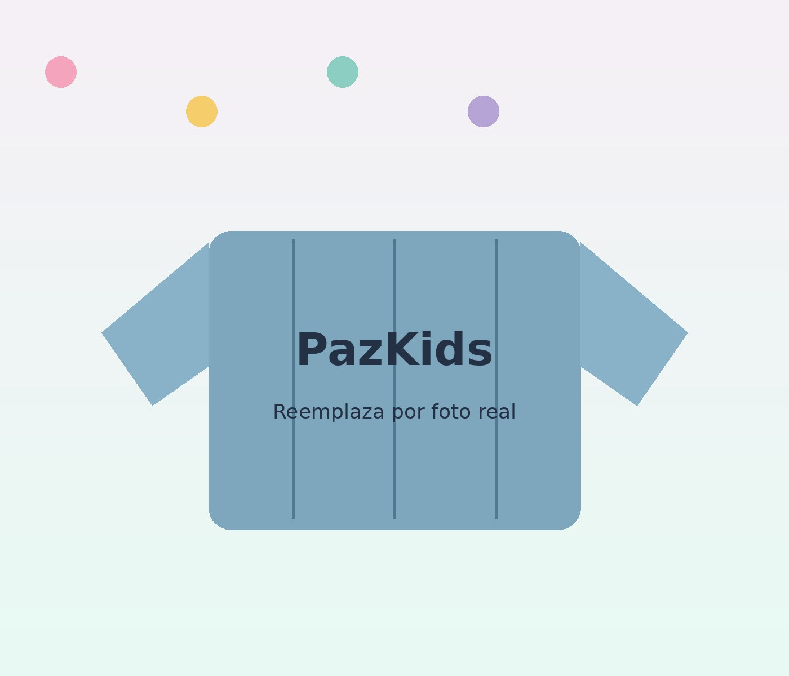
HECHAS PARA TODOS SUS PLANES
Una chaqueta PazKids es cómoda para jugar y lo suficientemente especial para salir: cumpleaños, comidas familiares, paseos, viajes, fiestas y fotos que se quedan en el álbum. Es suave, liviana y fácil de combinar, pensada para que tu hijo pueda moverse libremente y verse bien en cada ocasión.
Con su nombre, sus colores y sus parches favoritos, cada diseño habla de su forma de ser. Por eso no es una prenda más: es una chaqueta hecha para él, para que quiera usarla, disfrutarla y sentirla realmente suya.
Ver cómo funcionaFRENTE Y ESPALDA
La espalda puede contar su historia con el nombre, las letras y los parches favoritos. El frente puede mantenerse limpio o llevar pequeños detalles, para que la chaqueta siga siendo fácil de combinar y especial en cada ocasión.
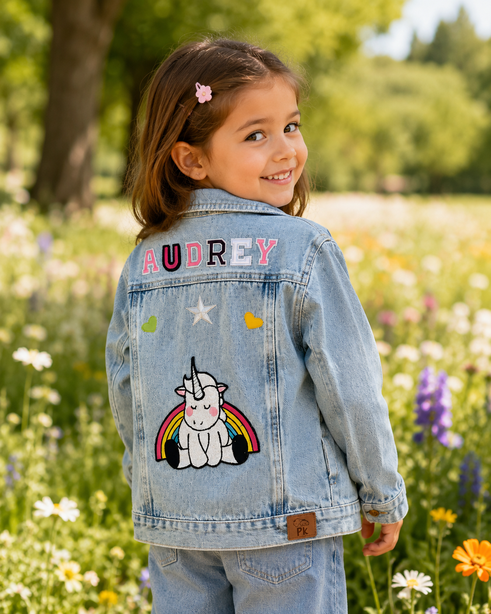
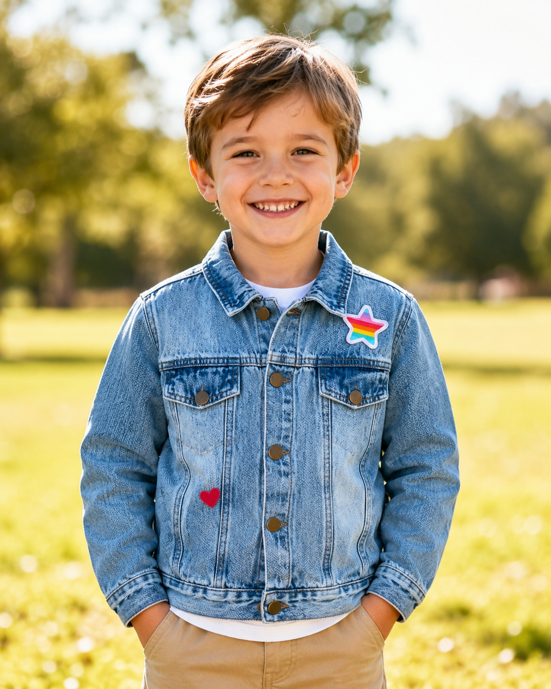
Personalizador web PazKids
Usa nuestro personalizador para elegir el nombre, probar colores, combinar parches, mover detalles y visualizar tu idea antes de hacer el pedido. Una forma más fácil, bonita y familiar de crear una chaqueta PazKids.
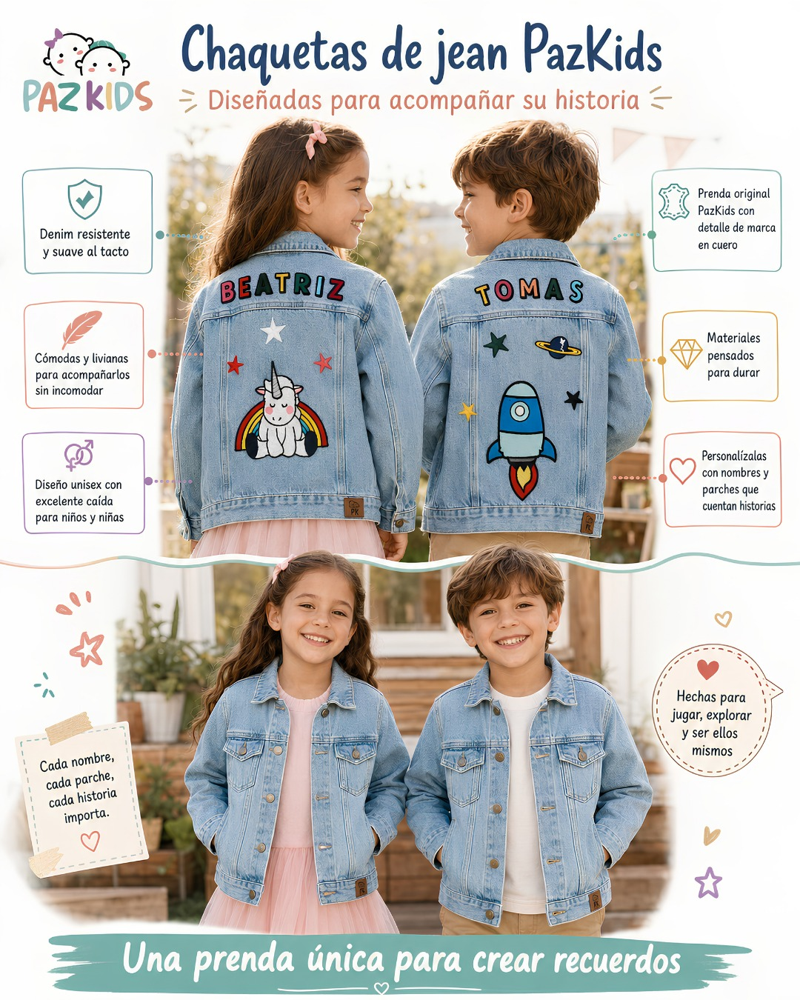
Biblioteca de prendas PazKids
Una selección de prendas reales para inspirar el diseño: chaquetas de jean, camisas personalizadas, nombres, parches y detalles que muestran la personalidad de cada niño.
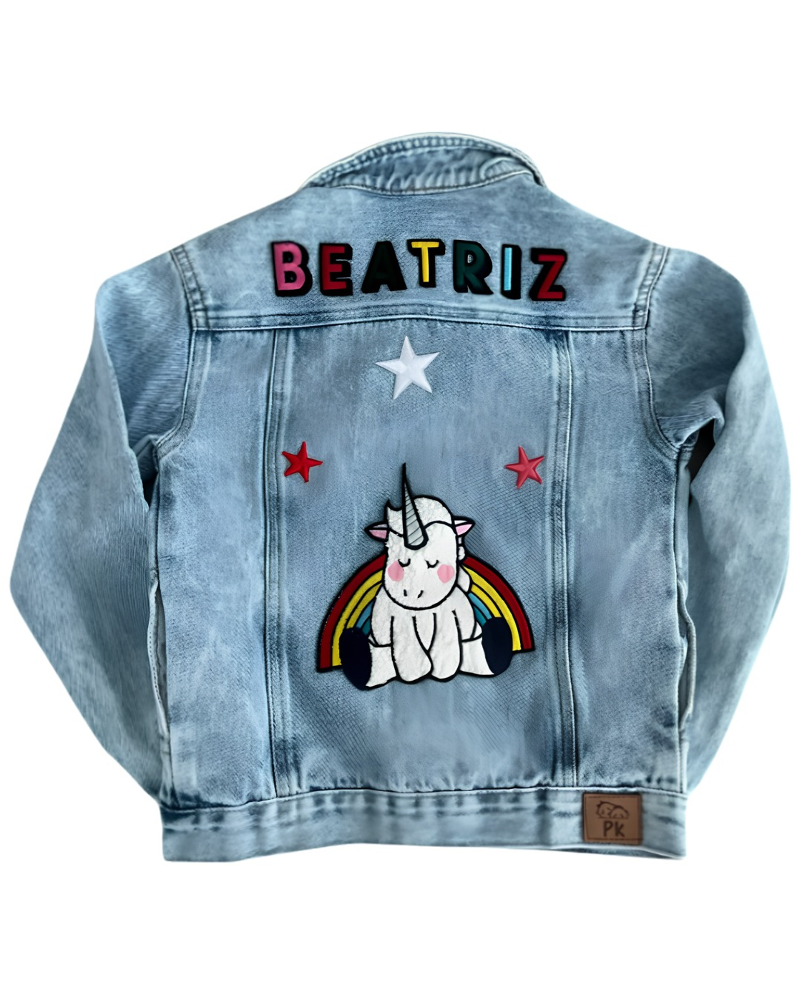
Nombre, color y parches elegidos para crear una chaqueta única.
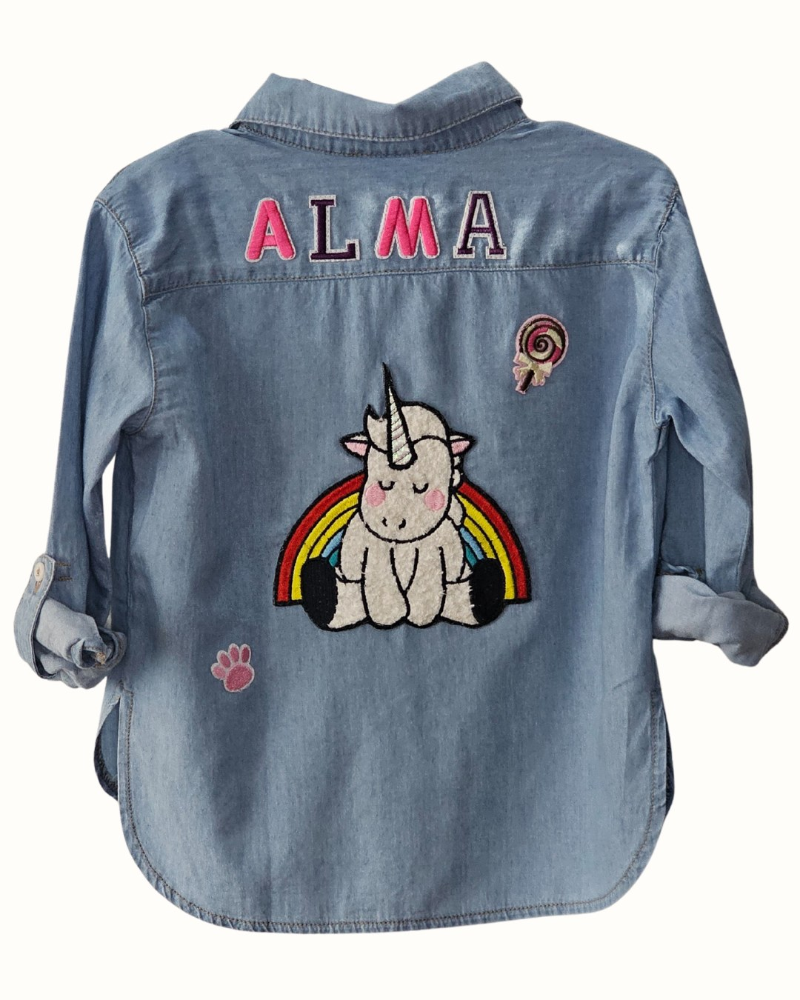
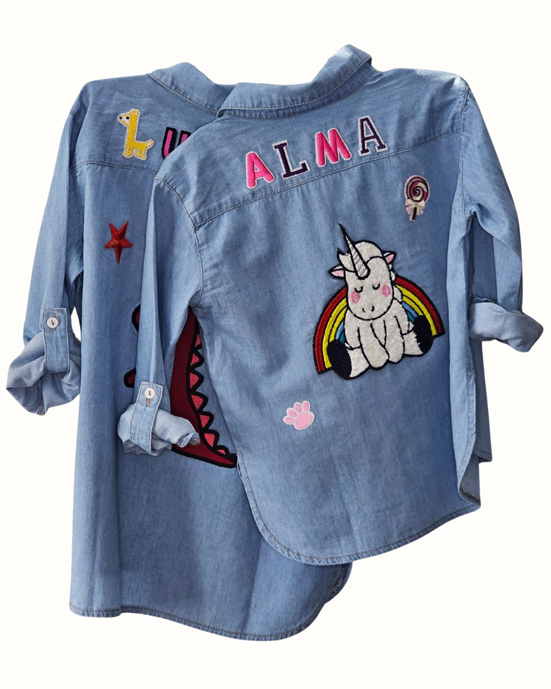
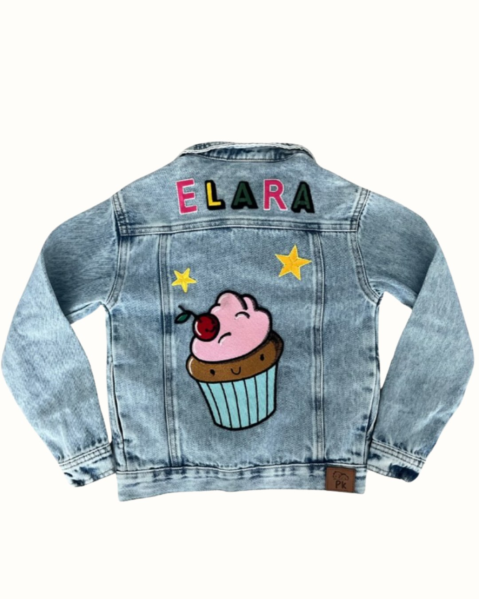
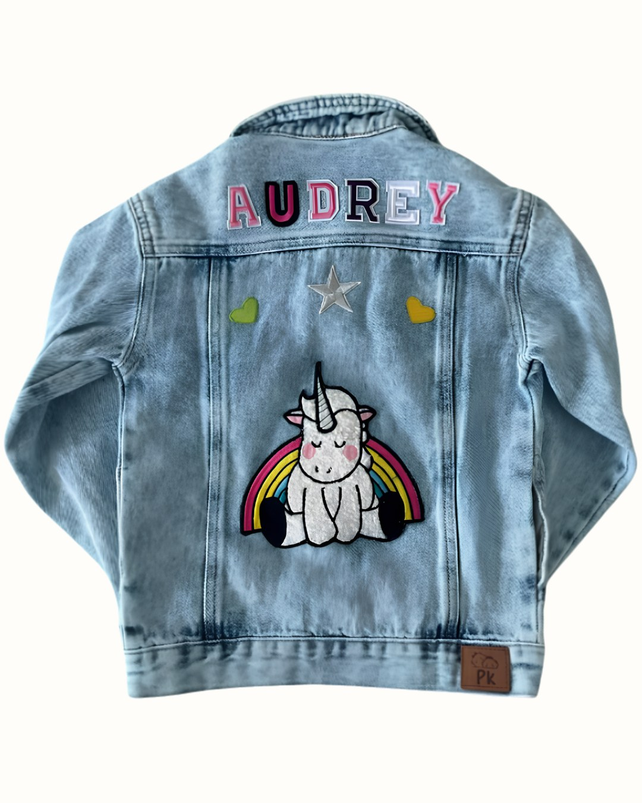
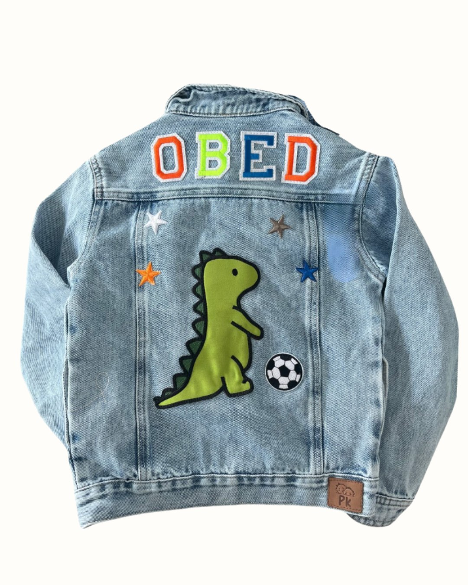
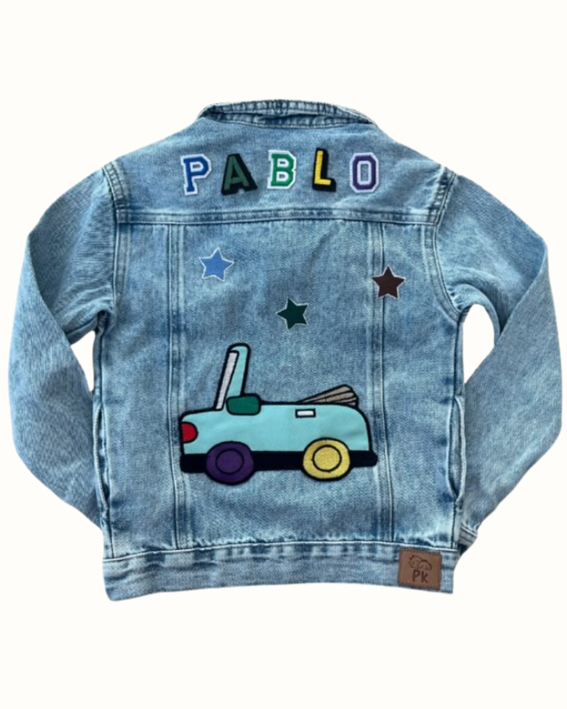
CÓMO SE PERSONALIZA
Tu diseño comienza con una chaqueta de jean PazKids: suave, liviana, cómoda y pensada para niños y niñas. Disponible en tallas desde 18 meses hasta 12 años, según disponibilidad.
Agrega su nombre o nickname, prueba colores y combina letras y parches seleccionados con cuidado por PazKids. Cada detalle ayuda a reflejar sus gustos, sus juegos y su forma de ser.
Si tienes un parche propio, un dibujo o una idea diferente, también puedes contárnosla. Revisamos contigo cómo integrarla al diseño para que la chaqueta quede realmente única.
Prueba letras, parches, colores y posiciones en el personalizador. Mueve, cambia, borra y vuelve a empezar hasta encontrar el diseño perfecto para tu chaqueta PazKids.
PREGUNTAS FRECUENTES
Queremos que diseñar una PazKids sea fácil, claro y bonito. Aquí resolvemos las dudas más comunes antes de personalizar, cotizar y hacer tu pedido.
Sí. Las chaquetas de jean PazKids son unisex y están pensadas para niños y niñas. Son suaves, livianas, cómodas y fáciles de combinar.
Manejamos tallas desde 18 meses hasta 12 años, según disponibilidad. Al cotizar tu diseño, te ayudamos a confirmar la talla ideal.
Recomendamos lavarla con cuidado, preferiblemente al revés, con agua fría y sin productos fuertes. Así ayudas a conservar mejor el denim, los colores y los detalles personalizados.
Sí. Una chaqueta PazKids puede ser un regalo especial para cumpleaños, viajes, celebraciones o momentos familiares. Puedes crear un diseño pensado para ese niño o niña y cotizarlo con nosotros.
Sí. Puedes agregar su nombre o nickname, probar colores y combinar letras y parches para crear una chaqueta que refleje sus gustos, sus juegos y su forma de ser.
Cuéntanos tu idea. Si tienes un parche especial, un dibujo o un diseño que no encuentras en el personalizador, revisamos contigo cómo hacerlo parte de una chaqueta o camisa de jean PazKids, según disponibilidad y viabilidad del diseño.
En PazKids creamos y personalizamos chaquetas y camisas de jean para niños. Las letras y parches no son fabricados directamente por la marca, pero son seleccionados con cuidado por su calidad, color y acabado para hacer parte de cada diseño PazKids.
El personalizador te muestra una idea visual muy cercana del resultado. Al revisar tu diseño por WhatsApp, confirmamos contigo ubicación, tamaño y detalles para que la chaqueta quede lo más fiel posible a lo que imaginaste.
Sí, mientras la chaqueta no haya entrado en proceso de personalización. Por eso revisamos contigo el diseño antes de confirmarlo.
Queremos que tengas una idea clara antes de cotizar tu diseño.
Chaqueta de jean personalizada desde USD $45. Incluye 1 parche protagonista y 4 detalles pequeños, que pueden ser letras o parches de detalle.
Camisa de jean personalizada desde USD $40. Incluye 1 parche protagonista y 4 detalles pequeños, que pueden ser letras o parches de detalle.
Letras adicionales: USD $2 cada una.
Parches protagonistas adicionales: desde USD $7 cada uno.
Detalles adicionales: desde USD $1 hasta USD $5, según su tamaño.
Chaqueta personalizada desde $140.000 COP.
Letras: $5.000 COP cada una.
Parches protagonistas: desde $25.000 COP cada uno.
Parches de detalle: desde $4.000 hasta $15.000 COP, según su tamaño.
El precio final se confirma por WhatsApp de acuerdo con el diseño elegido, la cantidad de letras, parches, detalles y disponibilidad.
Diseña la chaqueta en el personalizador, guarda la imagen y escríbenos por WhatsApp. Revisamos contigo talla, precio, disponibilidad y tiempo de elaboración antes de confirmar el pedido.
El tiempo de elaboración depende del diseño, la cantidad de detalles y la disponibilidad de la chaqueta. Al revisar tu diseño por WhatsApp te confirmamos el tiempo estimado de entrega.
Sí. PazKids tiene presencia en Panamá y Colombia. Escríbenos por WhatsApp para confirmar cobertura, tiempos y condiciones de envío según tu ciudad.
Diseña una PazKids con su nombre, sus colores y sus parches favoritos. Cuando te encante, guarda la imagen y cotízala con nosotros.